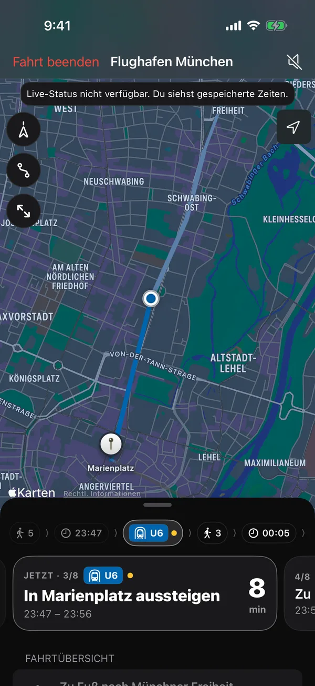
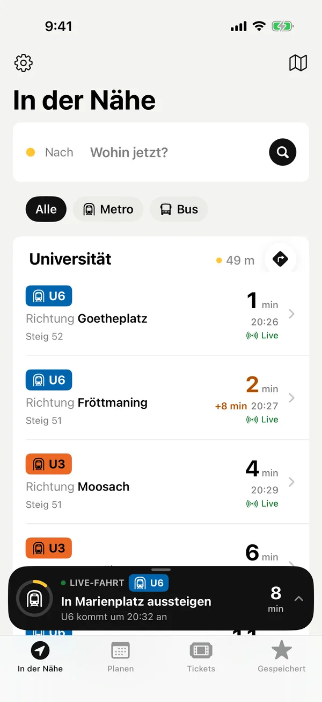
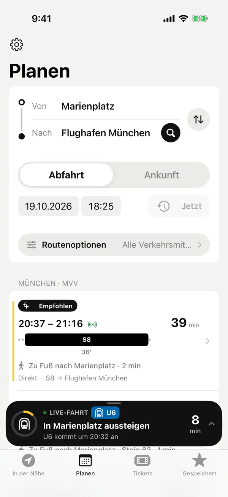
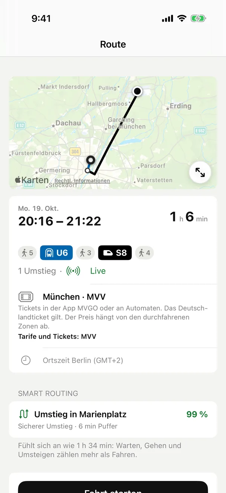
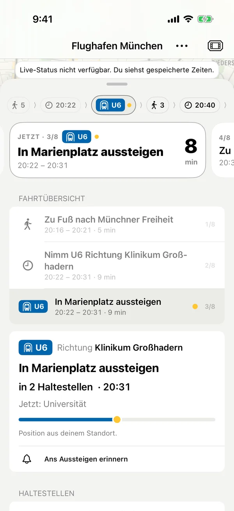
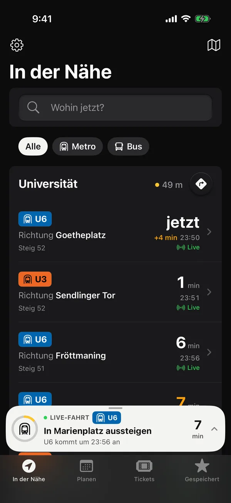
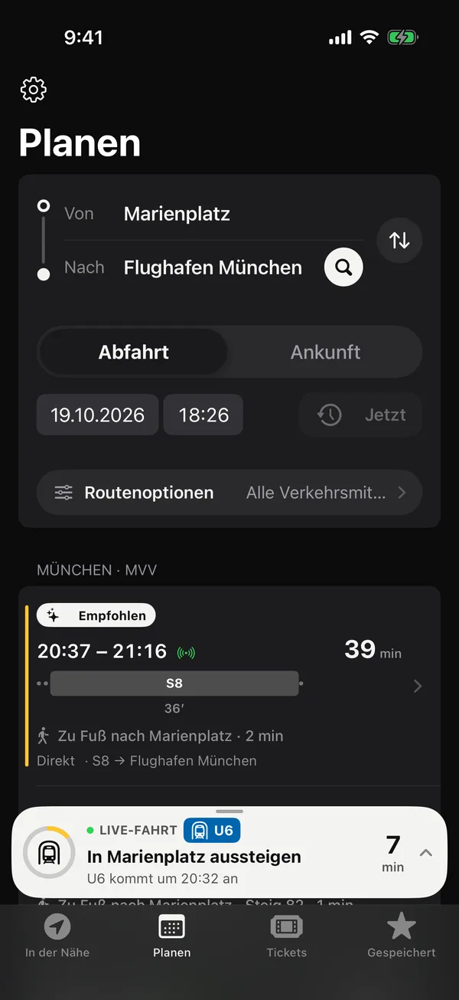
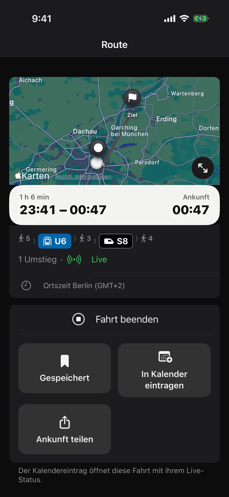
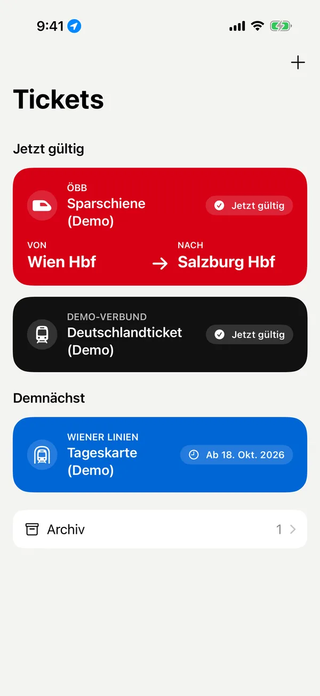

Keine Werbung
Zwischen dir und der nächsten Abfahrt steht keine Anzeige.
Für iPhone und Apple Watch · Open Source
Publit zeigt, was in deiner Nähe gleich abfährt, plant Routen durch ganz Europa und begleitet dich bis zum Aussteigen. Die App ist kostenlos und kommt ohne Werbung und ohne Konto aus.





01
Öffne Publit und sieh sofort die nächsten Abfahrten um dich herum: Linie, Richtung, Steig und die Minuten bis zur Abfahrt. Live-Zeiten und Verspätungen stehen direkt daneben.

02
Publit legt jede Verbindung auf dieselbe Zeitachse. So siehst du auf einen Blick, welche früher ankommt, wo du umsteigst und wo es knapp wird.

03
Jede Route zeigt oben, wann du losgehen musst und wann du ankommst. Darunter stehen die Karte und alle Schritte in den Farben der Linien, mit Steig, Haltestellen und Verspätungen.

04
Während der Fahrt zeigt Publit groß an, welche Linie du nimmst, wie lange es noch dauert und wo du aussteigst. Verspätungen und Gleiswechsel siehst du sofort, auch auf dem Sperrbildschirm und der Apple Watch.
05
Füge Tickets aus einem PDF, Foto oder Screenshot hinzu. Publit liest die Angaben auf deinem iPhone aus und lädt dabei nichts hoch. An der Sperre ist der Code sofort da.

Für den Weg zur Arbeit und für Städte, die du noch nicht kennst. Publit nutzt offene Fahrplandaten von Transitous, von der U-Bahn in München bis zum Vaporetto in Venedig.
Abdeckung in deiner Region ↗Zwischen dir und der nächsten Abfahrt steht keine Anzeige.
Öffnen und losfahren. Deine Orte bleiben auf deinem Gerät.
Die App enthält keine Analyse-SDKs und legt keine Profile an. Dein Standort verlässt das Handy nur für die Suche.
Der ganze Code liegt auf GitHub. Du kannst ihn lesen, die App selbst bauen und Verbesserungen schicken.
Publit ist noch in Entwicklung und kommt bald in den App Store. Bis dahin kannst du dir den Code ansehen, die App ausprobieren und Feedback geben.